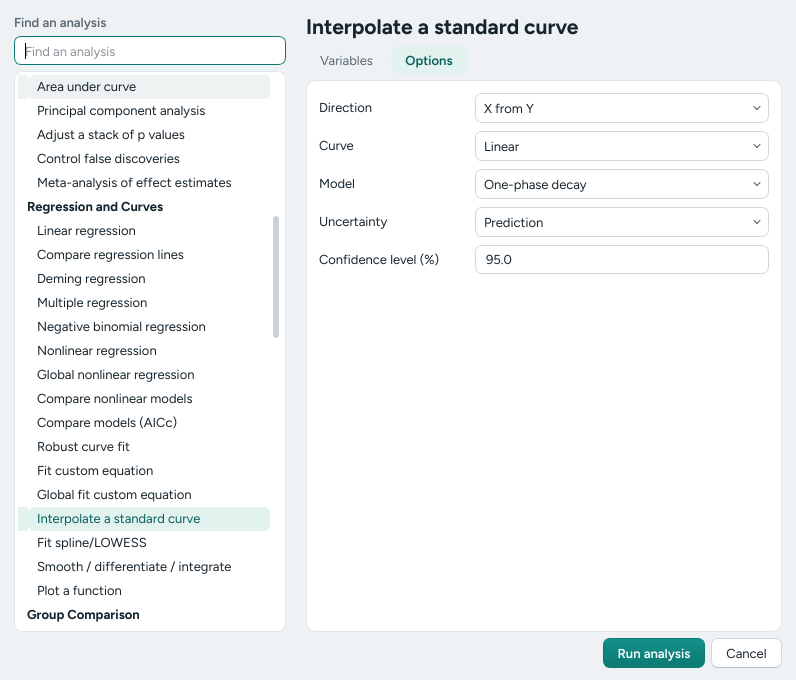
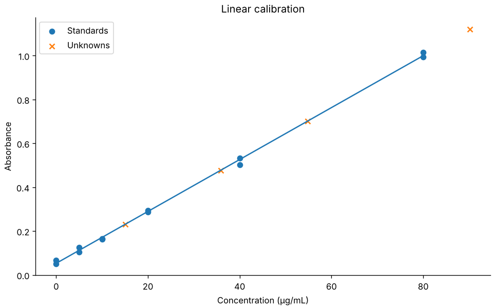
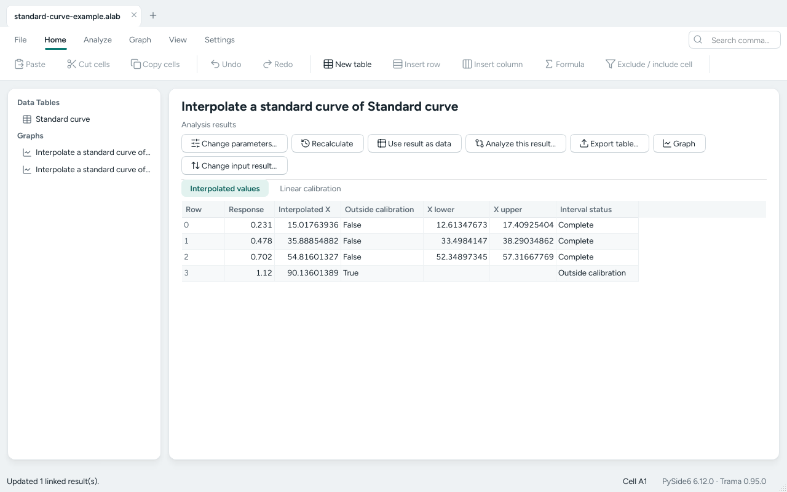
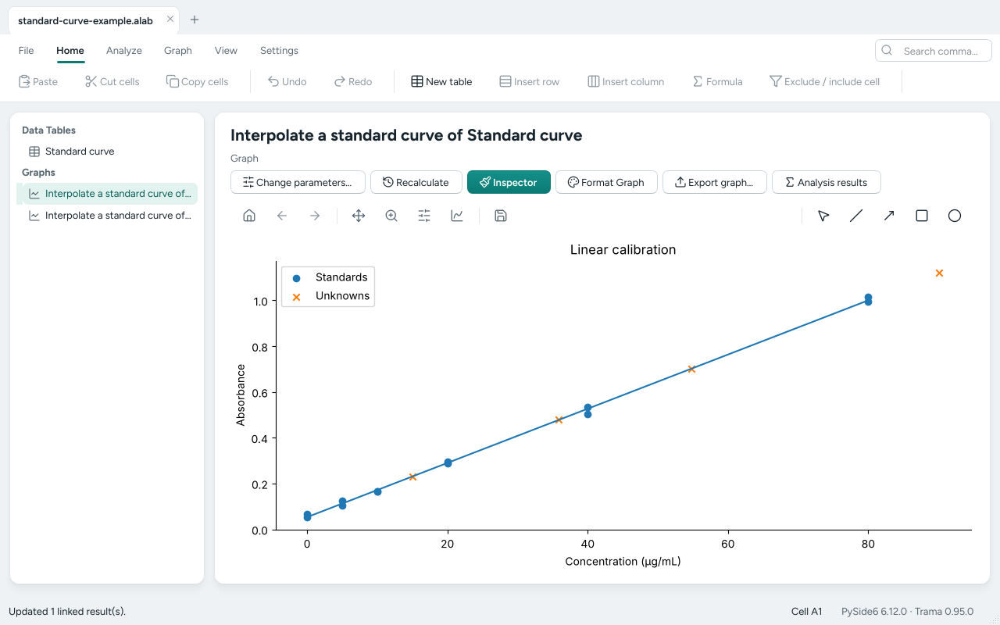

GuideCurves and calibrationStandard curve
Read concentrations off a standard curve
You have six standards of known concentration, read in duplicate, and four samples of which you only know the absorbance. What concentration do they have, with what uncertainty, and what do you do with a sample that falls off the curve?
- Checked on Trama 0.95.0 beta
- Data 12 standards and 4 unknowns, synthetic
- Seed 11
- Reading 8 minutes
When to use it
With a standard curve you measure the response of samples of known concentration, fit a curve, and then read it backwards: from the response of an unknown sample you work out its concentration. This is inverse interpolation, or calibration. In Trama it is done by Interpolate a standard curve with Direction = X from Y.
- The standards cover the unknowns. The curve is only valid between the lowest and the highest standard. Outside that range it is an extrapolation: the edge case shows how Trama flags it.
- The shape is right. Here the response is linear. If the curve flattens at high concentrations, choose Curve = Nonlinear and a sigmoidal model rather than trimming the line by eye.
- The blank is a standard. Zero concentration enters the fit like the other points and pins down the intercept.
- The right uncertainty. A sample read once carries the noise of that reading. You need the Prediction interval, not the Mean response one: the difference is shown in the result.
The data
A single table with three columns. Concentration (µg/mL) and Absorbance hold the 12 standards: 0, 5, 10, 20, 40 and 80 µg/mL, each in duplicate. Unknown samples (absorbance) holds the four readings to convert; the cells below them stay empty.
| Concentration (µg/mL) | Absorbance | Unknown samples (absorbance) |
|---|---|---|
| 0 | 0.052 | 0.231 |
| 0 | 0.068 | 0.478 |
| 5 | 0.126 | 0.702 |
| 5 | 0.105 | 1.120 |
| … 8 more rows, third column empty | ||
In Trama
- Open the project with File → Open…, or bring in the CSV with File → Import into project….
- Select the table Standard curve and choose Analyze → Analyze… (Ctrl+Shift+A).
- In the list of analyses open Regression and Curves → Interpolate a standard curve. On the Variables tab set X =
Concentration (µg/mL), Y =Absorbanceand Unknown responses =Unknown samples (absorbance). - On the Options tab set the values below and press Run analysis.
- For comparison the attached project contains the same interpolation with Uncertainty = Mean response.
| Direction | X from Y |
|---|---|
| Curve | Linear |
| Uncertainty | Prediction |
| Confidence level (%) | 95 |
The Model field only matters with the nonlinear curve.
Show the Options tab screenshot

Read the result
The Linear calibration tab reports the line: slope 0.011835 absorbance units per µg/mL (standard error 0.000128), intercept 0.0533, R² = 0.9988. The Interpolated values tab has one row per unknown sample.


| Absorbance | Concentration | 95% prediction interval | 95% mean-response interval |
|---|---|---|---|
| 0.231 | 15.02 | 12.61 – 17.41 | 14.30 – 15.72 |
| 0.478 | 35.89 | 33.50 – 38.29 | 35.19 – 36.60 |
| 0.702 | 54.82 | 52.35 – 57.32 | 53.87 – 55.79 |
| 1.120 | out of range | — | — |
The two intervals answer different questions. The mean-response interval says how uncertain the line is: it is narrow, about ±0.7 µg/mL, because 12 standards pin it down well. The prediction interval adds the noise of a single new reading, which is exactly what happens when you read an unknown sample once: about ±2.4 µg/mL. For a sample read once, report the prediction interval. Using the mean-response one makes the measurement look three times more precise than it is.
Show the Interpolated values tab screenshot

A sample beyond the highest standard
The fourth sample has an absorbance of 1.120. The highest standard, 80 µg/mL, read 1.015 and 0.995. Extending the line, Trama computes 90.1 µg/mL, but in the same row it sets Outside calibration = True, leaves the limits empty and writes Interval status = Outside calibration. In the graph the cross sits to the right of the last standard, where the line does not reach.
That 90.1 is not a measurement: no standard tells you whether the response is still linear at 90 µg/mL. What to do: dilute the sample so that it falls inside the curve and read it again, then multiply by the dilution factor; if you cannot, report it as “> 80 µg/mL”. Do not report 90.1.
Show the graph in the app

How to notice. The Outside calibration column is True: Trama sets it when the estimated concentration falls outside the range of the standards, here 0 to 80 µg/mL. In the graph the point lies past the last standard or before the blank.
What to report
- Concentrations and replicates of the standards, blank included, and the valid range of the curve.
- The model (linear, or which nonlinear one), slope, intercept and R².
- For each sample, the concentration with its prediction interval, and which samples were out of range and how they were handled.
- Trama version and the
.alabproject that repeats the calculation.
Concentrations were obtained by inverse interpolation from a calibration line fitted to six standards in duplicate (0–80 µg/mL; slope 0.01183 absorbance units per µg/mL, R² = 0.999) in Trama 0.95.0 beta, with 95% prediction intervals. One sample with an absorbance above the highest standard was reported as > 80 µg/mL.
Sources
- Osborne C. (1991). Statistical calibration: a review. International Statistical Review, 59(3), 309–336. doi:10.2307/1403690
- Draper N. R., Smith H. (1998). Applied Regression Analysis, 3rd ed. Wiley. doi:10.1002/9781118625590
- ICH (2022). M10: Bioanalytical method validation and study sample analysis. Scientific guideline, European Medicines Agency. ema.europa.eu
Checked with Trama 0.95.0 beta (tag v0.95.0, commit 4c07db6) on 20 November 2026. Calculation in analisi/exploration.py, graph and intervals in analisi/additional.py.